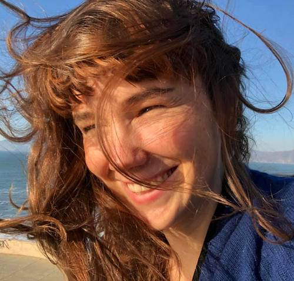
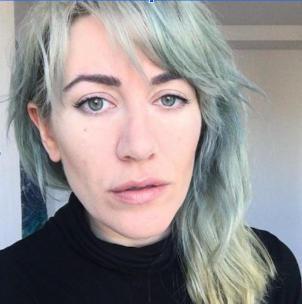

Dream Room:
Designing for peaceful feelings
Three years ago I went to Plan B, a new activist festival in Kharkiv, Ukraine. It was held in an old circus: majestic, gilded, and peeling apart at the edges. Everything felt urgent and raw and exciting. There were so many faces and smells and lights and so much noise.
By the end, I was exhausted.

The closing party was in a subterranean club. You could hear the urgent techno from the door.
Inside, relentless strobe-lit bodies pounding the ground. The air was wet with energy. Sweaty dancers were thrashing, pulsing, and flailing.
But in the top corner of the club, a single table. Dreamy candle-lit faces encircling the table. And the host gently pouring each person some tea.

It was perfect. It was a different kind of space inside the space. It was a space to find peace without retreat.
That's when I knew I would build spaces like this: spaces designed for peace inside the party.
What is the Dream Room?
The Dream Room is a warm, soft parallel to the magical chaos of a party. The dream room has soft hypnotic music, soft lights, soft surfaces, and warm tea.
The Dream Room is a ritual space for people to connect and reflect. Soft cushions, sheer curtains and heated blankets surround an interactive, slowed-down, softened live-feed video projection of the party.
At the centre of the space is a tea service with an ongoing tea ritual.
The tea service is held by gentle and strong people who make the space feel soft and safe.

Why have a Dream Room?
The Dream Room allows anyone to slip through a secret doorway into a softer party, and to emerge again with replenished energy.
The Dream Room is a way for people to stay present, to be a part of things, but to take care of themselves.
The Team
We all are personally invested in building softer spaces for care and contempation. The original design team included myself, Linsey, and Brie. Meredith joined us to create the interactive projection. And a team of 20 amazing hosts brought the installation to life.
 Marie Claire LeBlanc Flanagan Designing for play  Brie Code: TRU LUV, Carewave, Game Design Linsey Raymaekers : Personal Games, Game Programming
Inspiration
The chill-out sanctuary, a lost staple of 90s parties. Or the humble “rest area”, a concept developed by forward-thinking accessibility teams at music festivals.
Mood
We wanted to create a feeling of safety, of softness, and of care.

Credits, left to right: Unknown, Mirazozo - Architects of Air, Unknown, Frambach - the Soft Light, Céline Merhand and Anaïs Morel - Sensorium, Unknown, SCP-354, Crystal Ball Cavern — DANIEL ARSHAM, Captain Tenneal - Okra, Unknown, Ernesto Neto - Celula Nave, Missoni
Challenges
- Finding enough hosts to staff the dream room. Ensuring that these hosts have the capacity and training to creathe the space, which needs to be recreated and maintained through every moment.
- Ensuring that the space is warm, is soft, is safe. The steady and constant warmth of the space is absolutely critical to the concept.
- Technical details like projector mounting
Layout
Layout details: